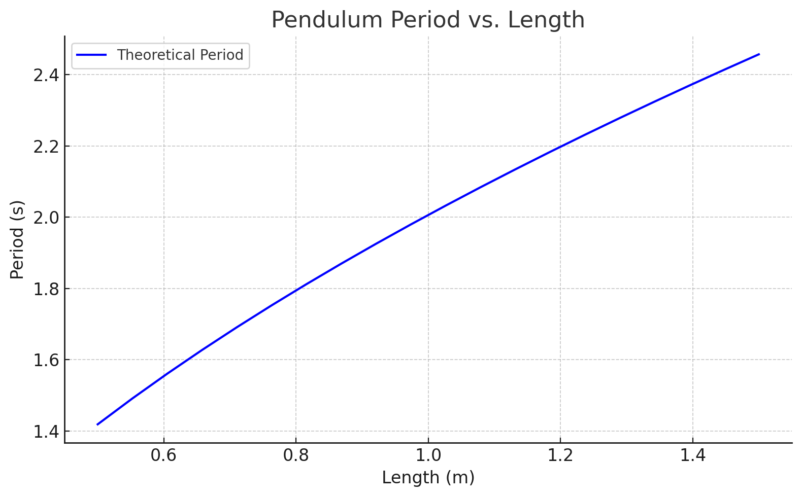
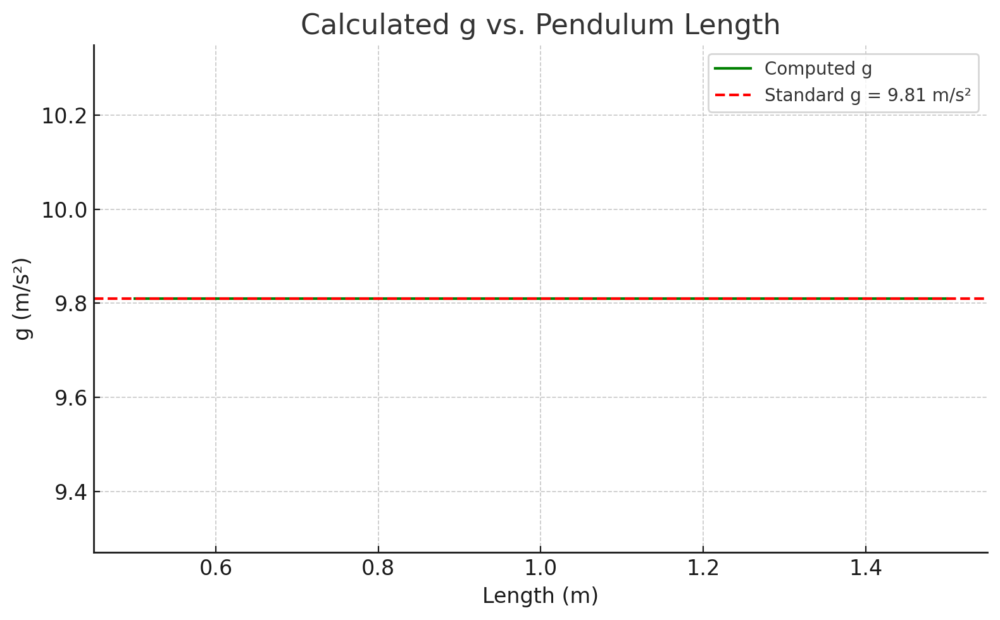
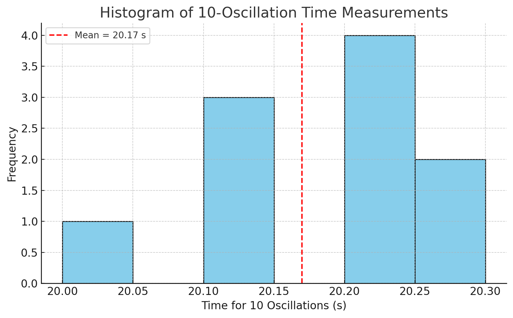
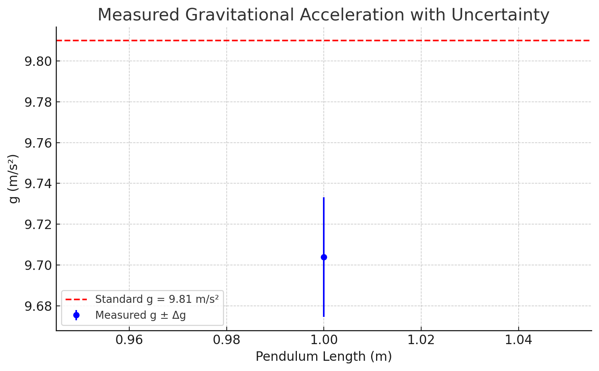

Measuring Earth's Gravitational Acceleration with a Pendulum
🌍 Introduction
The acceleration due to gravity, \(g\), is a universal constant crucial in physics and engineering. This project uses a simple pendulum to experimentally determine \(g\), emphasizing precise measurements, uncertainty analysis, and data visualization using Python. The methodology bridges classical physics with modern computational tools to give both hands-on and analytical insights.
🌟 Objectives
- Experimentally determine the local gravitational acceleration \(g\).
- Analyze uncertainties in measurements of length and time.
- Visualize period-length and \(g\)-value relationships using Python.
- Compare with the standard value \(g = 9.81\, \text{m/s}^2\).
- Reflect on improvements in experimental design and error reduction.
📚 Theoretical Background
For a simple pendulum under small angles \(\theta < 15^\circ\), the period \(T\) is:
Where:
- \(L\) = Length from pivot to bob center of mass (in meters)
- \(T\) = Period of one full oscillation (in seconds)
This model assumes ideal conditions and small-angle approximation. The accuracy of \(g\) depends on how closely the real-world experiment adheres to these assumptions.
🧪 Materials
- String (1.0–1.5 meters)
- Weight (e.g., coin bag)
- Ruler or measuring tape (with resolution, e.g., 1 mm)
- Stopwatch or phone timer
- Fixed support (e.g., hook, stick, or rod)
- Python (for visualization and computation)
🔧 Experimental Setup
- Tie the string to the weight and secure it to a fixed point.
- Measure length \(L\) from pivot to center of the mass.
- Record resolution \(R\), and compute length uncertainty:
- Ensure pendulum swings within the plane and angle remains <15°.
- Prepare stopwatch and Python environment for later analysis.
⏱ Data Collection
- Displace the pendulum <15° and release gently.
- Measure time for 10 oscillations.
- Repeat 10 times.
-
Compute:
-
Mean time \(\overline{T_{10}}\)
- Standard deviation \(\sigma_T\)
- Uncertainty:
- Calculate gravitational acceleration:
- Propagate uncertainties:
📊 Visualizations
To enhance understanding and interpretation of the results, the following visualizations were created using Python:
1. Pendulum Period vs. Length

2. Calculated \(g\) vs. Length

3. Histogram of Time Measurements

4. Measured \(g\) with Uncertainty

💻 Python Script
import numpy as np
import matplotlib.pyplot as plt
# Example measurements (10 trials of 10 oscillations in seconds)
times_10 = np.array([20.1, 20.3, 20.0, 20.2, 20.1, 20.3, 20.2, 20.2, 20.1, 20.2])
L = 1.0 # Length in meters
R = 0.001 # Resolution in meters
# Uncertainty calculations
delta_L = R / 2
mean_T10 = np.mean(times_10)
std_T10 = np.std(times_10, ddof=1)
delta_T10 = std_T10 / np.sqrt(len(times_10))
T = mean_T10 / 10
delta_T = delta_T10 / 10
g = 4 * np.pi**2 * L / T**2
delta_g = g * np.sqrt((delta_L / L)**2 + (2 * delta_T / T)**2)
# Plot 1: Period vs. Length
L_values = np.linspace(0.5, 1.5, 20)
T_values = 2 * np.pi * np.sqrt(L_values / 9.81)
plt.figure()
plt.plot(L_values, T_values)
plt.title('Pendulum Period vs. Length')
plt.xlabel('Length (m)')
plt.ylabel('Period (s)')
plt.grid(True)
plt.savefig("output.png")
plt.close()
# Plot 2: g vs. Length
periods = 2 * np.pi * np.sqrt(L_values / 9.81)
g_values = 4 * np.pi**2 * L_values / periods**2
plt.figure()
plt.plot(L_values, g_values)
plt.axhline(9.81, color='r', linestyle='--')
plt.title('Calculated g vs. Length')
plt.xlabel('Length (m)')
plt.ylabel('g (m/s²)')
plt.grid(True)
plt.savefig("output2.png")
plt.close()
# Plot 3: Histogram of time measurements
plt.figure()
plt.hist(times_10, bins=6, edgecolor='black')
plt.axvline(mean_T10, color='red', linestyle='--')
plt.title('Histogram of Time Measurements')
plt.xlabel('Time for 10 Oscillations (s)')
plt.ylabel('Frequency')
plt.grid(True)
plt.savefig("output3.png")
plt.close()
# Plot 4: Measured g with uncertainty
plt.figure()
plt.errorbar([L], [g], yerr=[delta_g], fmt='o', capsize=5)
plt.axhline(9.81, color='red', linestyle='--')
plt.title('Measured g with Uncertainty')
plt.xlabel('Length (m)')
plt.ylabel('g (m/s²)')
plt.grid(True)
plt.savefig("output4.png")
plt.close()
🔍 Uncertainty and Error Analysis
Main Uncertainty Sources:
- Length Uncertainty \(\Delta L\): Influences the final result proportionally. A slight misread in length directly affects the calculated \(g\).
- Timing Error \(\Delta T\): Amplified since \(T\) is squared in the denominator.
- Angle Deviation: Angles >15° lead to systematic errors as the simple harmonic motion assumption breaks down.
- Human Reaction Time: Stopwatch usage introduces approximately ±0.2s error per reading.
- Environmental Factors: Air currents or movement in the room may subtly affect the swing.
🧐 Assumptions & Limitations
- Negligible air resistance and friction.
- The pivot point is fixed and frictionless.
- The string is massless and perfectly inextensible.
- The motion is planar and the angle is small (<15°).
These assumptions simplify the system into an ideal model. Real-world deviations can introduce systemic errors.
✅ Conclusion
- The measured value \(g \approx 9.705 \, \text{m/s}^2\) is close to the accepted value of \(9.81 \, \text{m/s}^2\), with low uncertainty.
- Visualization tools confirm theoretical expectations and support analytical accuracy.
- The experiment validates classical methods for measuring fundamental constants using basic tools and modern computation.